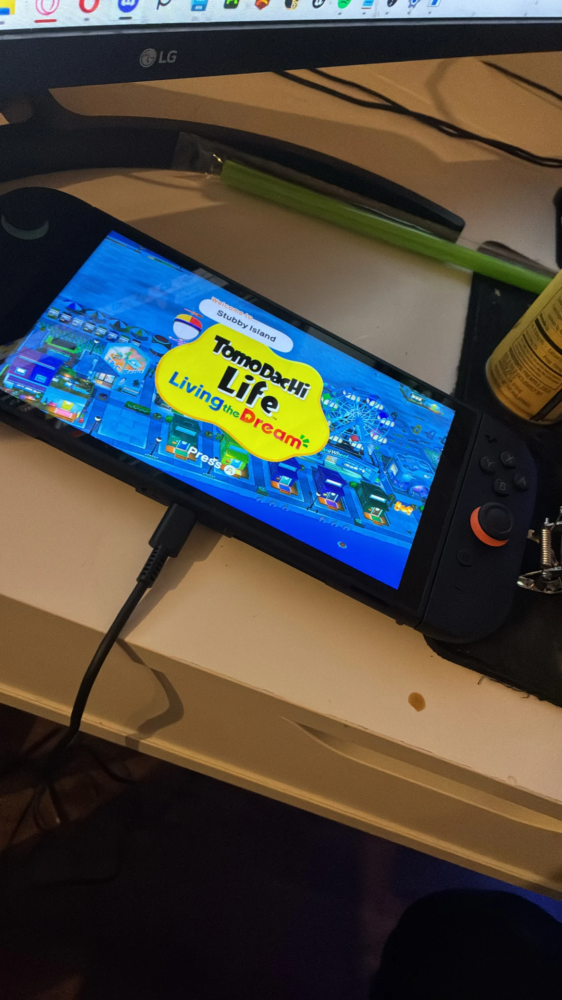
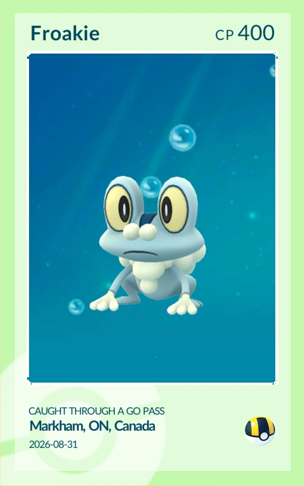
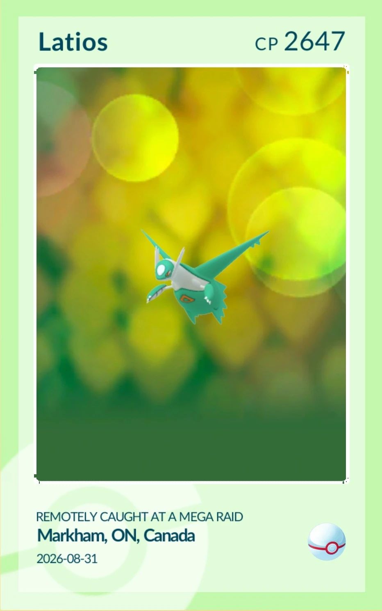
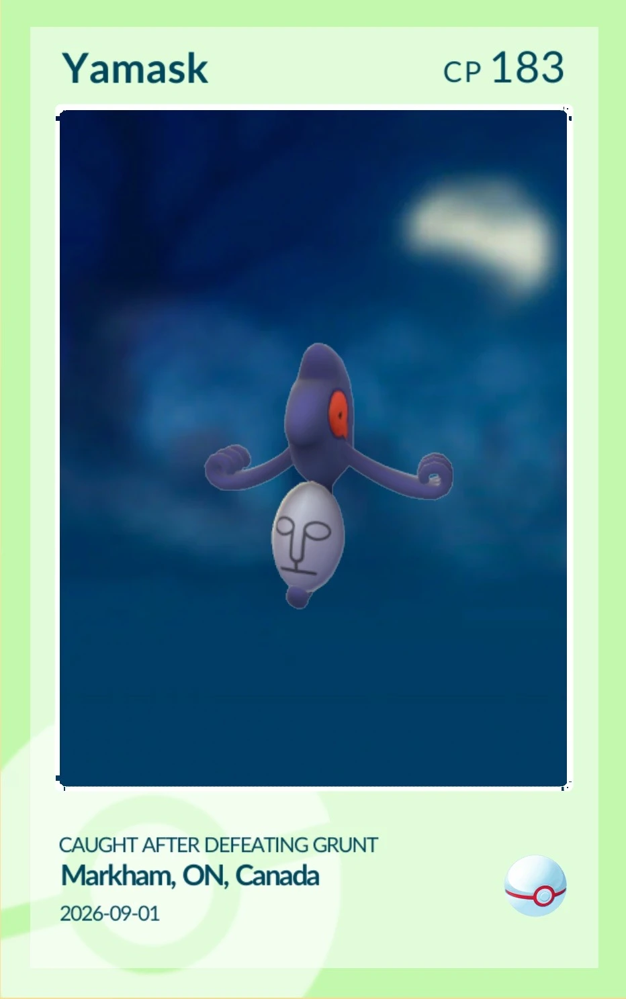
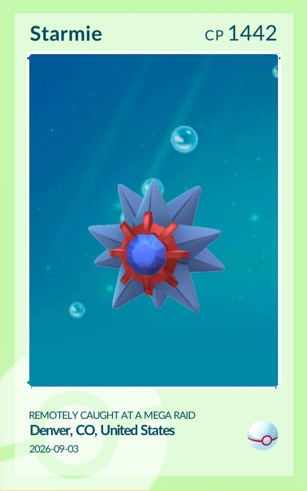
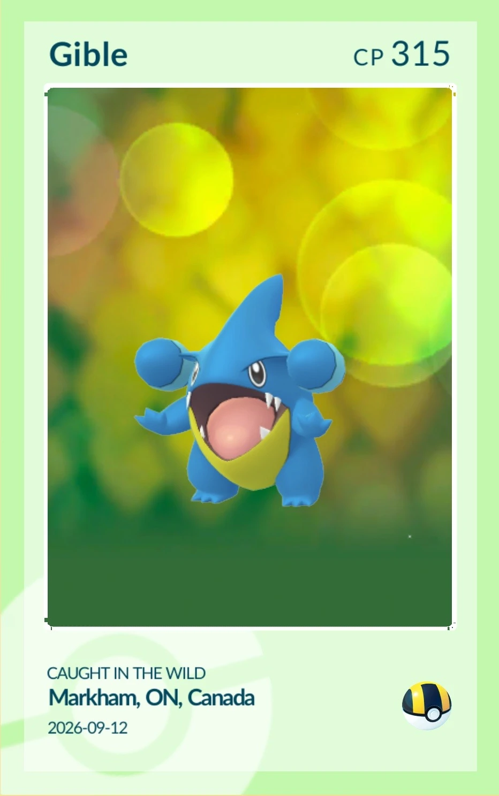
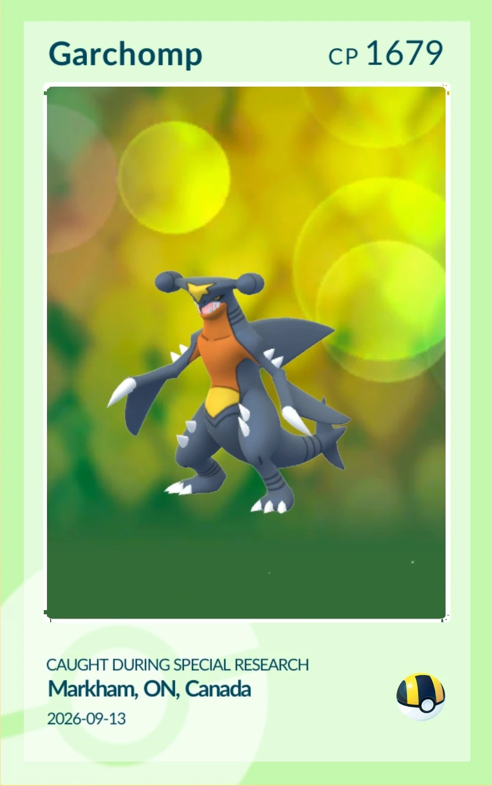
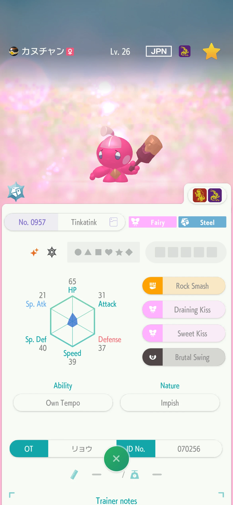
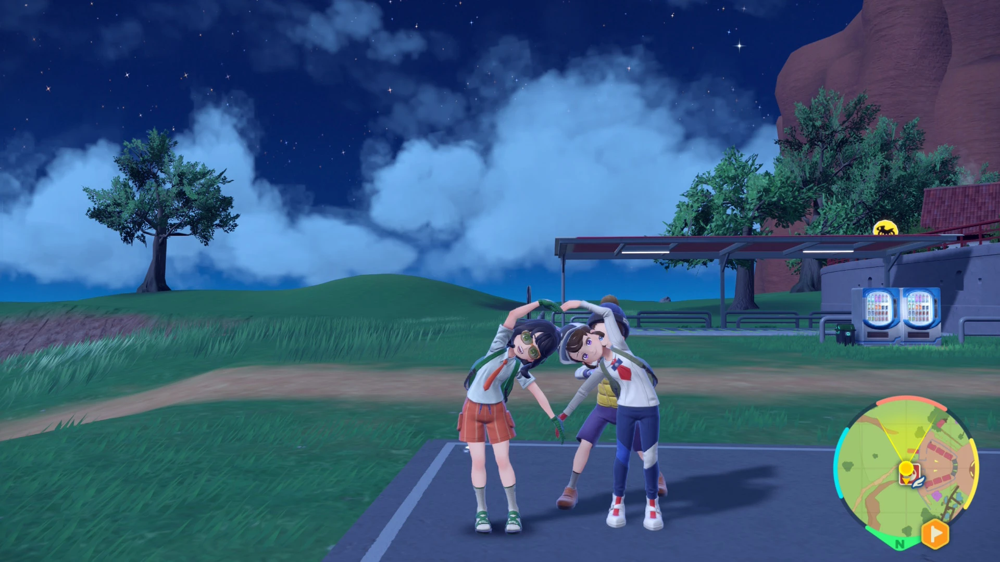
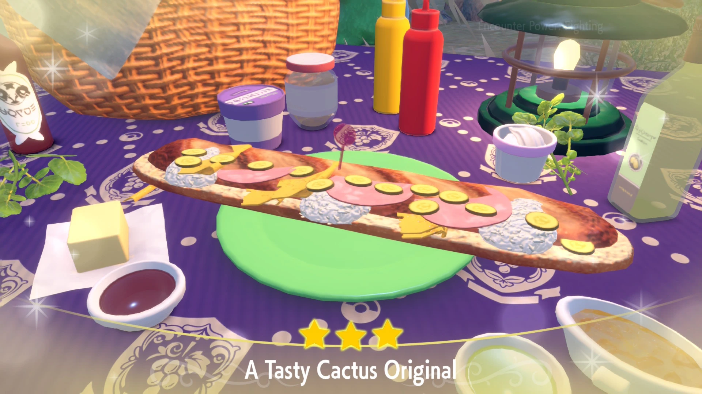

old games , new console
september somehow managed to be both an old-game nostalgia month and the month i acquired nintendo's newest console (˶ˆᗜˆ˵)
first : the pokémon black playthrough from last month's post is officially finished ! i started playing through my bf's halfway-completed save because his childhood pokémon need to travel from heartgold → black → poké transporter → bank → home , and black was the inconvenient missing bridge in the middle . in other words , i was not saving unova from evil so much as removing a data-migration bottleneck . . but it was still fun ᕙ( •̀ ᗜ •́ )ᕗ
my team was basically just old dns mystery gifts , including ray rizzo's shiny metagross , abram's cloyster and the shiny palkia , dialga and giratina from summer 2013 . i made sure to have bf's serperior (evolved it from servine when i first started on the save ! ) included til the end as well ~ i also continued funding the max repel industry because the frequency of random encounters in older pokémon games is annoying ( ;´ - `;)
transfer motives aside , i genuinely enjoyed finishing black ! it was nice reaching the end of an older game i probably would have kept postponing otherwise , and it as an obstruction to sending pokémon to home is clear . bf and i took the opportunity to use the poké transporter in game & ds link to play the minigame where you throw balls at the pokémon jumping around bushes , which i was oddly good at ? beginner's luck perhaps ꒰ᐢ. ̫ .ᐢ꒱
pokémon go , meanwhile , has been feeling increasingly antagonistic toward me . i hate when pokémon can apparently consume an alarming number of excellent curved throws with golden razz berries before simply deciding that it does not want to be caught and flees . . the general direction under scopely has not exactly improved my confidence either . . and yet i continue opening the app , so i am unfortunately still part of the problem ૮₍ ˃ ⤙ ˂ ₎ა but less so than i used to be ! and i definitely am not opening my wallet anymore >:(
my 3ds adventures have been considerably nicer ! i finally completed Charm Girls Club: My Perfect Prom , returning to a childhood game i had not finished before losing my ds in elementary school :D i have also been exploring I Love My Cats , and my next pokémon game on the 3ds will be sun ( not ultra ! )
and my bf got me a switch 2 . . ! ! (⸝⸝ᵕᴗᵕ⸝⸝) i was obviously very grateful , but setting it up came with a bittersweet retirement for my switch lite . i have only owned the lite for a few months , it came from a collector's open-box unit , and i had customised it enough that it was something i was proud of .
the upgrade also taught me that my perfectly functional 64 gb sandisk microSDXC card does not count as switch 2 storage because the new console specifically requires microSD express . . apparently even my memory cards can become obsolete overnight (╥﹏╥)
getting a dockable switch that can be connected to a monitor has paved the way for me to getting into splatoon 3 . . . i think this is the first pvp - first game that i'm really enjoying this much , i don't really know why - it's just fun ? i am obsessed with the bloblobber . . which bf hates but alas , it is perfectly up my alley as far as the game's weapon types go . i also like blasters but they have served me better in pve ( cough cough , splatoon raiders ) than pvp so far . . there's a learning curve i have to get past to succeed with it T_T but i honestly love the bloblobber so much i barely want to try anything else lol . i also really like the splatoon lore ( i got splatoon 2 just because i want to play the campaign , along with both 2 and 3's dlcs )
pictures of : my new switch 2 , shenanigans in scarlet / violet , and september / end of august shinies :p









